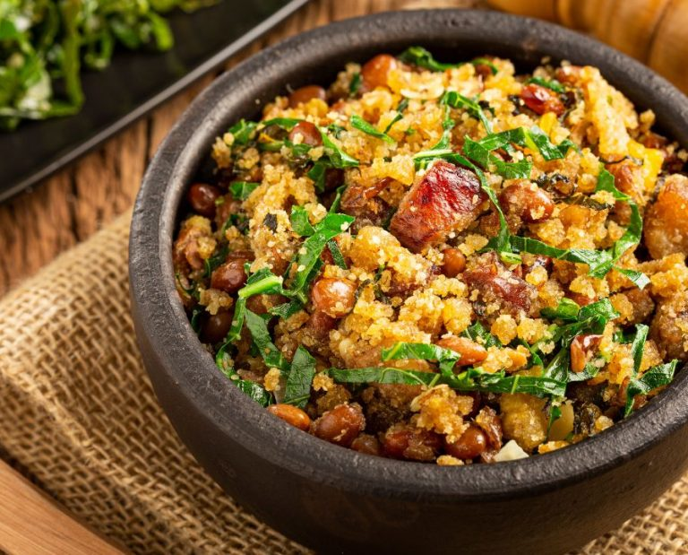
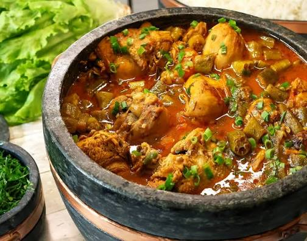
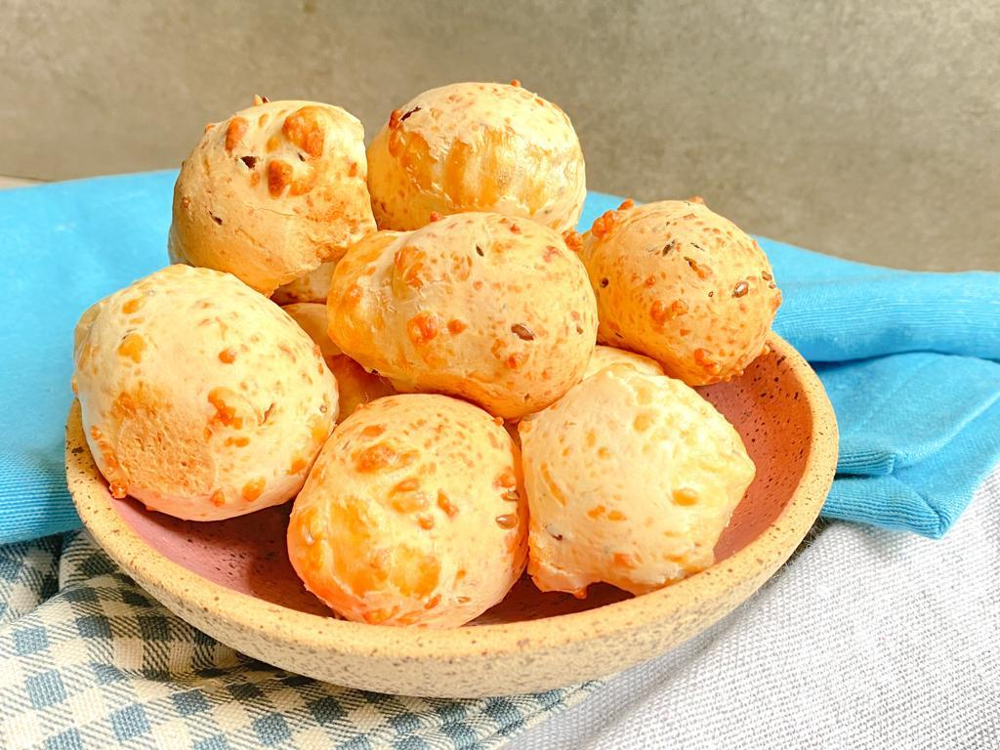
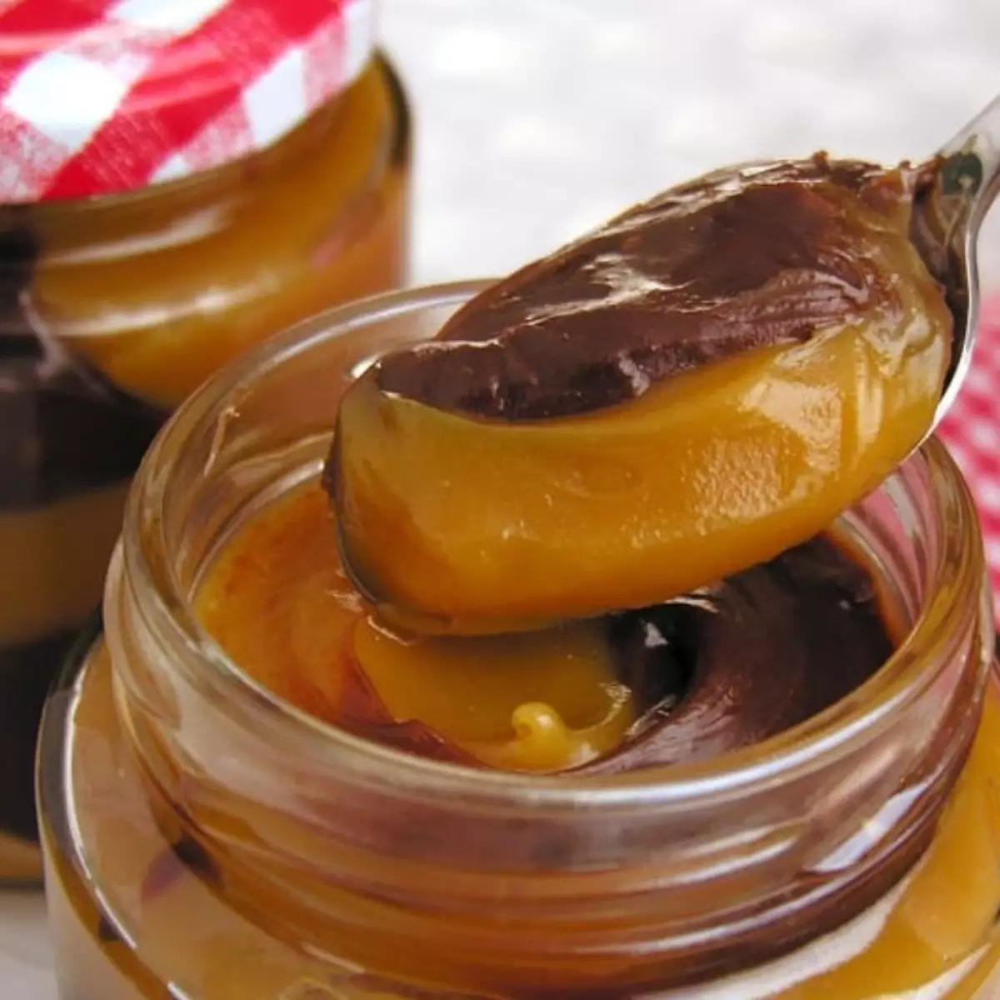

Pratos Típicos

Feijão Tropeiro
Prato tradicional da culinária mineira.

Frango com Quiabo
Receita típica presente em diversos restaurantes.

Pão de Queijo
Reconhecido como símbolo da gastronomia mineira.

Doces Caseiros
Compotas e doces produzidos artesanalmente.